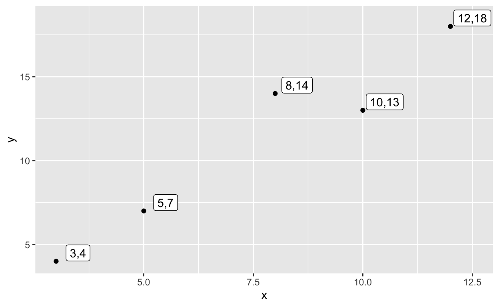
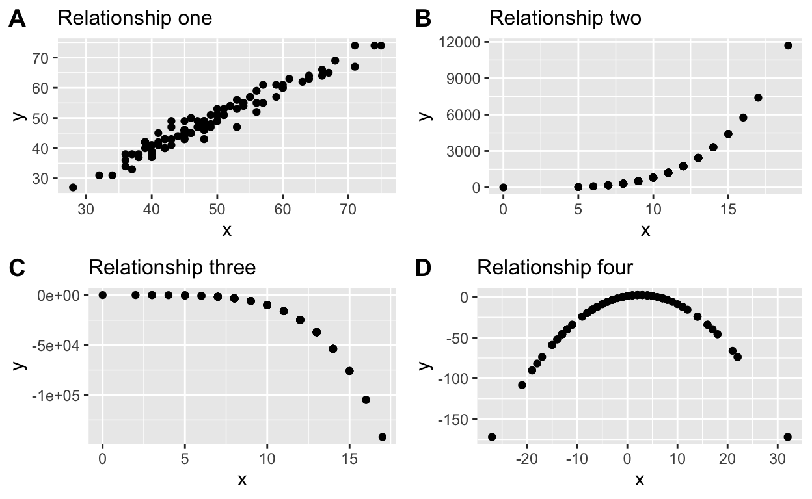

Correlation is a way of measuring the extent to which two variables are related. This means we need to analyse whether as one variable increases, the other
This can be done by calculating the covariance or correlation of two variables.
We will use a small dataset to illustrate the concepts of covariance and correlation: Let’s imagine we obtained purchase data from 5 different people. In particular, we collected information about how often they purchased products from company x and company y in the last month.
| x | y |
|---|---|
| 3 | 4 |
| 5 | 7 |
| 8 | 14 |
| 10 | 13 |
| 12 | 18 |
Notational conventions:
n represents the number of distinct data points, or observations, in our sample.
p denotes the number of variables that are available in the dataset.
\(x_{ij}\) represents the value of the jth variable for the ith observation, where i = 1, 2, . . ., n and j = 1, 2, . . . , p.
Please answer the following questions to verify that you understand the notational conventions.
Multiple choice questions:
When we analyse the relationship between two variables, one of the most useful techniques for gaining a first insight into this relationship is a scatterplot. Check the illustration of the two variables to get an idea of the kind of relationship between them:

In this scatterplot, each person in the dataset is represented by a point in two-dimensional space. The coordinates of this point (\(x_{ij}\),\(y_{ij}\)) are the individual’s scores on variables x and y respectively.
To get more information about the usage of scatterplots, review the chapter covariance in Grolemund and Wickham (2016)
Answer the following questions to verify that you understand the relationship between x and y
One way to quantify the relationship between two variables is to calculate the covariance, which basically is a number that reflects the degree to which two variables vary together.
Covariance is closely related to the variance (also referred to as \(s^2\) or \(\sigma^2\)) of one variable. Remember, that the variance for a single variable is computed as:
\[ s^2 = \frac{1}{(n-1)} \sum_{i=1}^n (x_i - \bar{x})^2 \]
The variance tells us how far the observations are spread out from their average value. Let’s obtain the variance of variable x and y for our example:
The results from step 1 to 3 are illustrated in this table:
| x | y | x_mean | y_mean | x_dev | y_dev | x_dev_sq | y_dev_sq |
|---|---|---|---|---|---|---|---|
| 3 | 4 | 7.6 | 11.2 | -4.6 | -7.2 | 21.16 | 51.84 |
| 5 | 7 | 7.6 | 11.2 | -2.6 | -4.2 | 6.76 | 17.64 |
| 8 | 14 | 7.6 | 11.2 | 0.4 | 2.8 | 0.16 | 7.84 |
| 10 | 13 | 7.6 | 11.2 | 2.4 | 1.8 | 5.76 | 3.24 |
| 12 | 18 | 7.6 | 11.2 | 4.4 | 6.8 | 19.36 | 46.24 |
Now we are able to calculate the variance of both variables (step 4 and 5):
## [1] "variance of x = 13.30"## [1] "variance of y = 31.70"In contrast to variance, the covariance (\(cov_{XY}\)) tells us whether there is a relation between the deviations of two different variables across observations. It is defined as:
\[ covariance = \frac{1}{(n-1)} \sum_{i=1}^n (x_i - \bar{x})(y_i - \bar{y}) \]
This value will be far from zero when x and y are both highly deviant from the mean:
if they are deviant in the same direction then the covariance is positive, whereas
if they are deviant in opposite directions the covariance is negative.
To be able to determine the covariance, we first need to calculate the crossproduct of x_dev and y_def:
| x | y | x_mean | y_mean | x_dev | y_dev | x_dev_sq | y_dev_sq | crossproduct |
|---|---|---|---|---|---|---|---|---|
| 3 | 4 | 7.6 | 11.2 | -4.6 | -7.2 | 21.16 | 51.84 | 33.12 |
| 5 | 7 | 7.6 | 11.2 | -2.6 | -4.2 | 6.76 | 17.64 | 10.92 |
| 8 | 14 | 7.6 | 11.2 | 0.4 | 2.8 | 0.16 | 7.84 | 1.12 |
| 10 | 13 | 7.6 | 11.2 | 2.4 | 1.8 | 5.76 | 3.24 | 4.32 |
| 12 | 18 | 7.6 | 11.2 | 4.4 | 6.8 | 19.36 | 46.24 | 29.92 |
Finally, we can determine the covariance:
## [1] "sum of cross products = 79.40"## [1] "covariance: 19.85"Note that we don’t usually use the covariance to describe relationships between variables, because it strongly depends upon the standard deviation of the variables. For example, a value of \(cov_{XY}=1\) might reflect a high degree of correlation when the standard deviations are very small, but a low degree of correlation when the standard deviations are high (Howell, 2009). This makes the covariance hard to interpret.
Instead of calculating the covariance, we would usually use the correlation coefficient r (often referred to as Pearson’s correlation coefficient r after the statistician Karl Pearson) to describe linear relationships between two numerical (at least intervall scaled) variables. It is important to note that the correlation coefficient can only assess linear relationships.
The correlation coefficent r is computed by standardising the covariance by the standard deviations of the two variables (i.e. divide by the standard deviations of both variables).
Remember that the standard deviation is simply the positive square root of the variance:
## [1] "standard deviation of x = 3.65"## [1] "standard deviation of y = 5.63"The correlation coefficient r is calculated as follows:
\[ r = \frac{covariance}{s_xs_y} = \frac{1}{(n-1)} \frac{\sum_{i=1}^n (x_i - \bar{x})(y_i - \bar{y})}{s_x s_y} \]
## [1] "correlation coefficient = 0.97"The correlation coefficient is much more useful than the covariance because it only can vary between \(-1\) and 1. We interpret the magnitude of the relationship according to Cohen (1992):
No linear relationship (“horizontal”):
Positive linear relationship (“uphill”):
Negative linear relationship (“downhill”):
However, the r coefficient must be interpreted cautiously. Specifically, r = 0.97 should not be interpreted to mean that there is a 97 % of a relationship between the two variables. The correlation coefficient is simply a point on the scale between \(-1\) and 1, and the closer it is to either of those limits, the stronger is the relationship between the two variables (Howell, 2009).
You should also be aware of the fact that a specific correlation value could occur by chance even if there is no relationship. This is especially true, if you have a small sample size. Therefore, we need a second measure to investigate the statistical significance of the relationship.
We can test the null hypothesis that the correlation is zero by converting a correlation value into a t statistic (the details are not important here).
##
## Pearson's product-moment correlation
##
## data: df$x and df$y
## t = 6.5458, df = 3, p-value = 0.007248
## alternative hypothesis: true correlation is not equal to 0
## 95 percent confidence interval:
## 0.5742408 0.9978860
## sample estimates:
## cor
## 0.9667297The test shows that - under the assumption that the null hypothesis of r = 0 is true - the likelihood of an r value this extreme or more is quite low (review the p-value). Therefore, we would reject the null hypothesis of \(r=0\).
One common problem with the standard correlation coefficient is that this measure is very sensitive to outliers. For example, in the figure below, we can see how a single outlying data point can cause a very high positive correlation value, even when the actual relationship between the other data points is perfectly negative.
An simulated example of the effects of outliers on correlation. Without the outlier the remainder of the datapoints have a perfect negative correlation, but the single outlier changes the correlation value to highly positive (Poldrack, 2019).
One way to address outliers is to compute the correlation on the ranks of the data after ordering them, rather than on the data themselves; this is known as Spearman’s correlation.
The Spearman correlation (also called Spearman’s rho or Spearman’s \(\rho\) ) is a measure of rank correlation. In particular, it assesses the statistical dependence between the rankings of two (at least ordinal scaled) variables.
An important difference between the correlation coefficient r and Spearman’s rho is that while Pearson’s correlation can only assess linear relationships, Spearman’s rank correlation assesses monotonic relationships (whether linear or not). A monotonic relationship between two variables is a relationship where:
as the value of one variable increases, so does the value of the other variable (positive relationship), or
as the value of one variable increases, the other variable value decreases (negative relationship).
For our example dataset, the ranked data and the corresponding Spearman’s rho is as follows:
| x | y | x_mean | y_mean | x_dev | y_dev | x_dev_sq | y_dev_sq | crossproduct |
|---|---|---|---|---|---|---|---|---|
| 3 | 4 | 7.6 | 11.2 | -4.6 | -7.2 | 21.16 | 51.84 | 33.12 |
| 5 | 7 | 7.6 | 11.2 | -2.6 | -4.2 | 6.76 | 17.64 | 10.92 |
| 8 | 14 | 7.6 | 11.2 | 0.4 | 2.8 | 0.16 | 7.84 | 1.12 |
| 10 | 13 | 7.6 | 11.2 | 2.4 | 1.8 | 5.76 | 3.24 | 4.32 |
| 12 | 18 | 7.6 | 11.2 | 4.4 | 6.8 | 19.36 | 46.24 | 29.92 |
| rank_x | rank_y |
|---|---|
| 1 | 1 |
| 2 | 2 |
| 3 | 4 |
| 4 | 3 |
| 5 | 5 |
##
## Spearman's rank correlation rho
##
## data: df$x and df$y
## S = 2, p-value = 0.08333
## alternative hypothesis: true rho is not equal to 0
## sample estimates:
## rho
## 0.9In the case of the previous example with one outlier, the Spearman correlation is -0.45 instead of r = 0.83, showing that the rank correlation reduces the effect of the outlier:
## [1] -0.4545455
Please answer the following questions.
Multiple choice questions with more than one correct answer:
Please find below the correlation results (correlation coefficient r as well as Sperman’s correlation) for the different relationships.
Correlation coefficient r for relationship one:
##
## Pearson's product-moment correlation
##
## data: dfOne$x and dfOne$y
## t = 45.079, df = 98, p-value < 2.2e-16
## alternative hypothesis: true correlation is not equal to 0
## 95 percent confidence interval:
## 0.9655443 0.9843079
## sample estimates:
## cor
## 0.9767259Spearman’s \(\rho\) for relationship one:
## Warning in cor.test.default(dfOne$x, dfOne$y, method = "spearman"): Cannot
## compute exact p-value with ties##
## Spearman's rank correlation rho
##
## data: dfOne$x and dfOne$y
## S = 5609.5, p-value < 2.2e-16
## alternative hypothesis: true rho is not equal to 0
## sample estimates:
## rho
## 0.9663397Correlation coefficient r for relationship two:
##
## Pearson's product-moment correlation
##
## data: dfTwo$x and dfTwo$y
## t = 15.019, df = 98, p-value < 2.2e-16
## alternative hypothesis: true correlation is not equal to 0
## 95 percent confidence interval:
## 0.7637774 0.8860473
## sample estimates:
## cor
## 0.8349383Spearman’s \(\rho\) for relationship two:
## Warning in cor.test.default(dfTwo$x, dfTwo$y, method = "spearman"): Cannot
## compute exact p-value with ties##
## Spearman's rank correlation rho
##
## data: dfTwo$x and dfTwo$y
## S = 0, p-value < 2.2e-16
## alternative hypothesis: true rho is not equal to 0
## sample estimates:
## rho
## 1Correlation coefficient r for relationship three:
##
## Pearson's product-moment correlation
##
## data: dfThree$x and dfThree$y
## t = -14.011, df = 98, p-value < 2.2e-16
## alternative hypothesis: true correlation is not equal to 0
## 95 percent confidence interval:
## -0.8730701 -0.7388042
## sample estimates:
## cor
## -0.8167063Spearman’s \(\rho\) for relationship three:
## Warning in cor.test.default(dfThree$x, dfThree$y, method = "spearman"): Cannot
## compute exact p-value with ties##
## Spearman's rank correlation rho
##
## data: dfThree$x and dfThree$y
## S = 333300, p-value < 2.2e-16
## alternative hypothesis: true rho is not equal to 0
## sample estimates:
## rho
## -1Correlation coefficient r for relationship four:
##
## Pearson's product-moment correlation
##
## data: dfFour$x and dfFour$y
## t = 2.0894, df = 98, p-value = 0.03926
## alternative hypothesis: true correlation is not equal to 0
## 95 percent confidence interval:
## 0.01051963 0.38722245
## sample estimates:
## cor
## 0.206511Spearman’s \(\rho\) for relationship four:
## Warning in cor.test.default(dfFour$x, dfFour$y, method = "spearman"): Cannot
## compute exact p-value with ties##
## Spearman's rank correlation rho
##
## data: dfFour$x and dfFour$y
## S = 119804, p-value = 0.004611
## alternative hypothesis: true rho is not equal to 0
## sample estimates:
## rho
## 0.2811024Choose the right test (according to the identified relationship in the illustrations).
Multiple choice questions with one correct answer:
Cohen, J. (1992). A power primer. Psychological bulletin, 112(1), p. 155.
Howell, D. C. (2009). Statistical methods for psychology. Cengage Learning.
Poldrack, R. A. (2019). Statistical Thinking for the 21st Century (Draft: 2019-04-06). GitHub